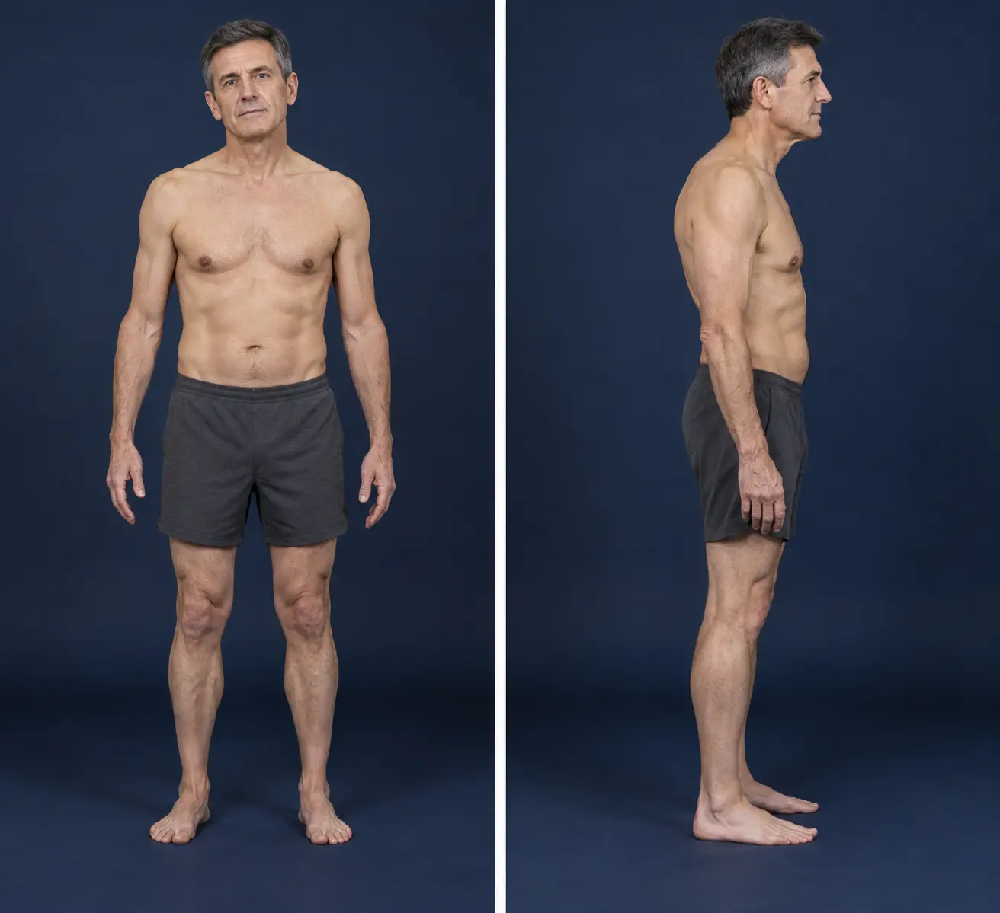

BIOMETRIC AGE ASSESSMENT DASHBOARD
MEASURE | ANALYSE | OPTIMISE | TRACK STATUS
BIOMETRIC AGE ASSESSMENT DASHBOARD
MEASURE | ANALYSE | OPTIMISE | TRACK STATUS
EXAMPLE REPORT — fictional demonstration; all readings are illustrative. No client photographs are displayed.
DEXA · 4 MODEL INPUTS · 43% OF THE SCORE
Body composition illustration omitted from this public example.
MOVEMENT · ALIGNMENT · POSTURE ANALYSIS

Fictional demonstration: head 0.8 cm left (front), 2.0 cm forward (side); pelvis 1.2 cm right. AI-generated fictional person; illustrative posture, not a measured photograph.
BLOOD PRESSURE & RESTING HEART RATE · CURRENT MEASUREMENTS

Category position is shown, rather than a linear numeric axis. Reference ranges depend on age and sex. This is demonstration data, not a client record.
THE BLOOD & HORMONE DOMAIN · 29% OF THE MODEL · 08 OCT 2026

Fictional example readings; laboratory intervals illustrate the Sussex Pathology report format. The five model inputs are the blood and hormone markers the AFT Bio Age Model scores; the fictional hsCRP result is 0.8 mg/L and is included in the calculation. All example readings are invented demonstration values. Additional blood results are available in the private client report and carry no model weight. Automated report, not reviewed by a physician.
BIOLOGICAL AGE · COMPOSITE OF 12 WEIGHTED MARKERS
Fictional example values at NOW; ages in the chart are rounded to whole years. Earlier biometric ages are not on file, so nothing is drawn before the current assessment. The dashed section is an extrapolation, not a measurement or a forecast.
The NOW values match the DEXA figures in Body Composition. Example bone density T-score: +3.0 (fictional). Only one biometric age is on file, so it is shown as a single point.
Documents are listed for reference. Source files are held securely and are not downloadable from this page.